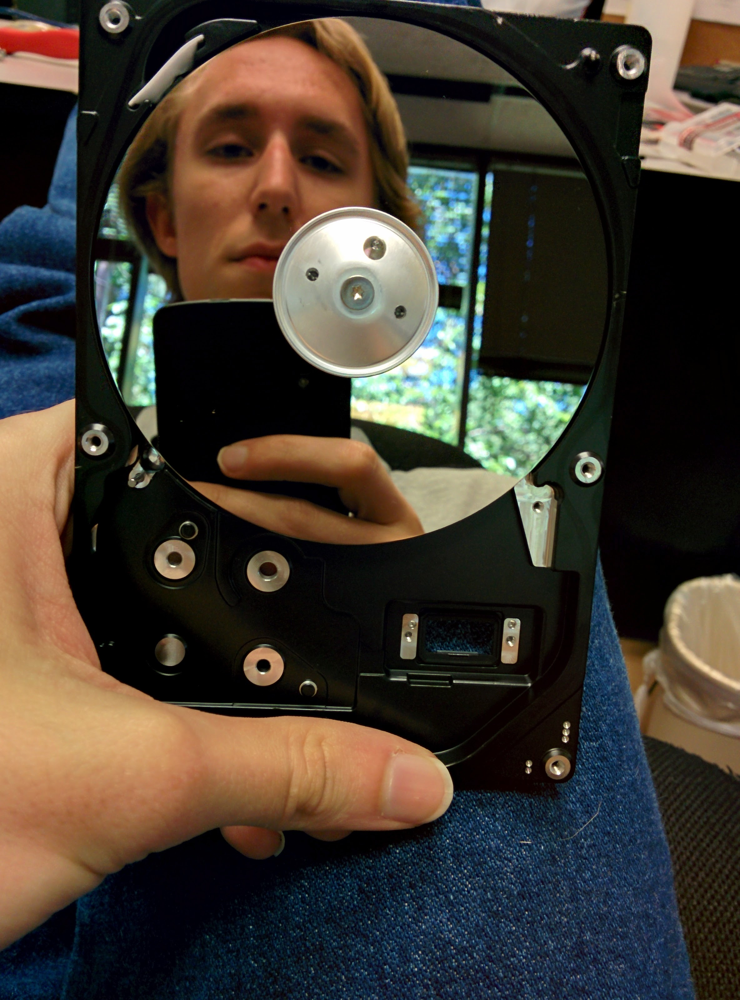
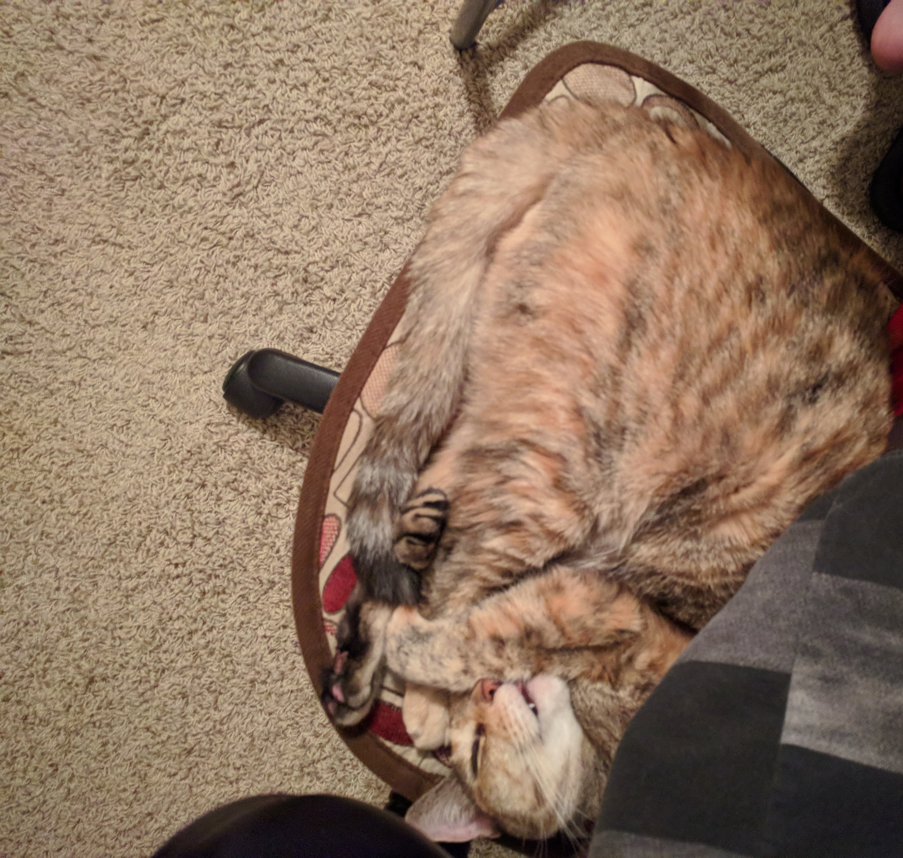

About
About Me
This is the personal website of me, Josh Braden.
After following community college to a logical conclusion, I earned a BS from Sam Houston State University in Computer Science, with a concentration in information security.
But you're probably not interested in resume stuff - so look at these pictures instead

Me, shortly after starting this website

Me, early in my IT career

Biscuit helping me code
About This Website
This site is hosted as a Github user page for me, josbraden.
It's coded and maintained by hand in HTML by me - can you tell I'm not really a web guy?
The inspiration for the *extremely* minimal design largly originated from a certain parodic website that may or may not actually be parodic.
You have to admit, if you can get beyond the simplicity of the design it's a perfectly functioning website: one directory, few pages, couple of pictures.
Auto-resizes so it looks fine on any sized screen: almost everyone's guaranteed to get the message the site's throwing at you - that I'm not a web designer.